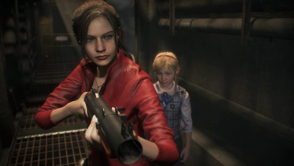
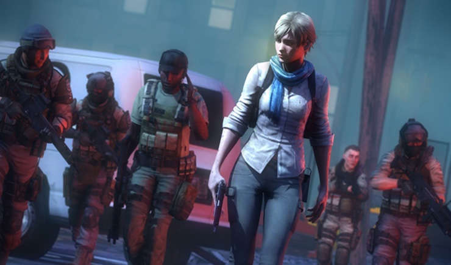
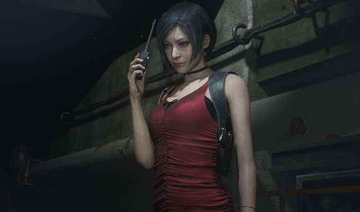
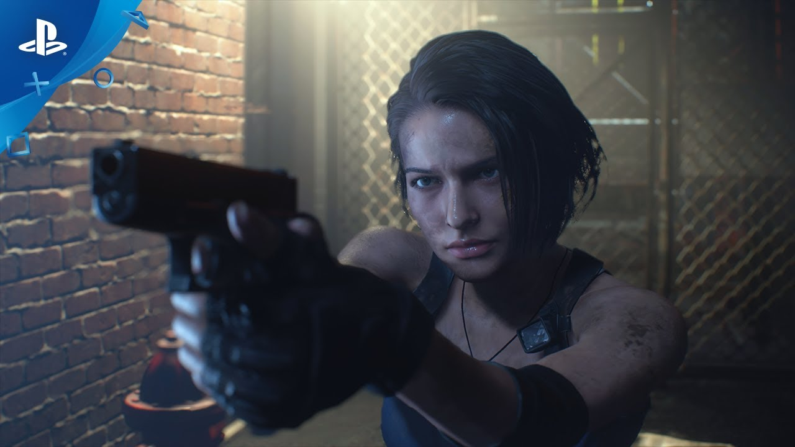

Di usia yang hampir menapaki seperempat abad, waralaba Resident Evil telah melahirkan sejumlah karakter cewek yang paling ikonik dan paling dikenang. Bukan hanya dalam cakupan genrenya sebagai game survival-horror, tapi juga industri game itu sendiri secara menyeluruh.
Karakter-karakter cewek ini selalu tampil dengan pakaian yang khas dan kepribadian unik yang saling melengkapi. Mungkin enggak semuanya melekat dalam ingatan lo. Akan tetapi, masing-masing dari mereka punya porsi yang lebih dari cukup untuk membuktikan diri bahwa mereka layak disertakan ke dalam daftar ini. Berikut heroine terbaik yang kehadirannya bikin Resident Evil Series jadi makin berwarna!
5. Ashley Graham

“Leon, HELP!” – Ashley Graham kepada Leon S. Kennedy
Yap, harus diakui kutipan di bikin Ashley jadi salah satu karakter paling nyebelin yang pernah lo temuin di jagat Resident Evil. Dalam satu-satunya game yang melibatkan namanya, Resident Evil 4, dia hanya bisa merengek meminta tolong kepada Leon setiap kali Ganados menggotong dirinya.
Selain harus mengawasinya setiap saat, lo pun harus memastikan supaya Health Point (HP) doi tetap dalam kondisi prima. Jangan sampai ditinggal juga. Sebab, kalau itu terjadi, situasi bakal makin gawat. Pokoknya, benar-benar bikin ribet, deh!
| Baca Juga : |
|---|
| 5 Perbedaan Resident Evil 2 Remake dengan Aslinya |
4. Claire Redfield

“Tak akan kubiarkan hal buruk menimpamu, dunia membutuhkanmu!” – Sherry Birkin kepada Jake Muller
Koneksi antara Sherry dengan korporasi culas Umbrella sudah terjalin semenjak dia masih duduk di bangku sekolah. Wajar aja, kedua orang tuanya, William dan Annette Birkin, adalah ilmuwan virologi terpandang yang punya kontribusi tak ternilai bagi perusahaan dalam menciptakan G-Virus.
3. Sherry Birkin

“Dengar! Kau hanya punya dua pilihan, membunuh atau terbunuh, silakan putuskan!” Claire Redfield
Claire adalah satu dari sekian karakter yang muncul dalam banyak sekali judul Resident Evil. Dia tercatat telah membintangi tiga titel penting di franchise ini, yakni Resident Evil 2, Resident Evil: Code Veronica, dan Resident Evil: Revelations 2. Portofolio perannya dipastikan bertambah seiring dengan peluncuran Resident Evil 2: REmake.
| Baca Juga : |
|---|
| Fakta tentang Krauser : Teman Leon? |
2. Ada Wong

“Leon, lama tak berjumpa.” – Ada Wong kepada Leon
Ada Wong adalah karakter sempurna yang merepresentasikan simbol wanita seksi dalam lingkup video game. Sosok cerdas dan cergas dengan paras yang rupawan khas percampuran ras Asia Timur-Amerika. Membuat siapapun jadi tak berkutik di hadapannya, termasuk mayat hidup. Yap, makhluk-makhluk yang dia anggap menjijikan ini bisa dengan mudah dilibasnya tanpa kesulitan berarti.
Ada Wong merupakan seorang agen wanita terbaik dengan karakterisasi yang misterius. Satu waktu, dia bisa memihak kepada kubu musuh. Sebaliknya, di kesempatan lain dia justru menolong Leon dan kawan-kawan.
1. Jill Valentine

“Akhir riwayat Umbrella tinggal masalah waktu saja.” – Jill Valentine
Selain Cortana dan Lara Croft, mungkin nama Jill Valentine bakal ikut terlintas di benak lo jika membahas siapa karakter cewek paling ikonis dalam video game. Dia telah “berkarier” di industri ini sejak tahun 1996 atau saat Resident Evil, waralaba game yang kelak akan terus menghantui lo selama lebih dari dua dekade kemudian, dilahirkan.
Source : www.kincir.com